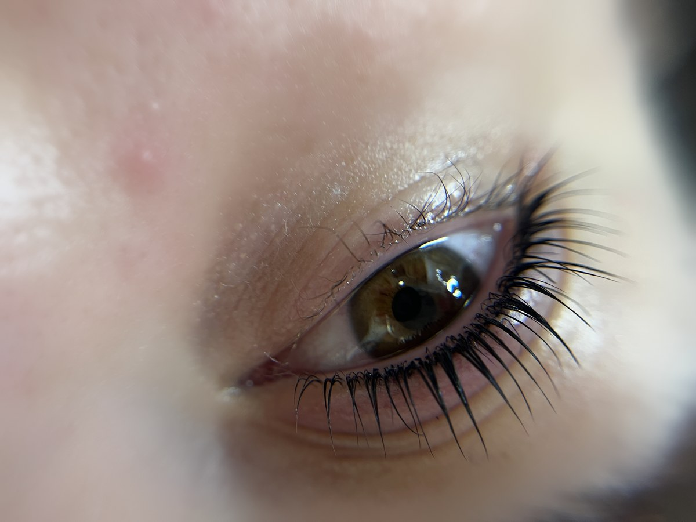

Ívelt, hangsúlyos pillák szempillaspirál és műszempilla nélkül.
Időpontfoglalás
A saját pilláidat kíméletesen megemelem és tartósan ívelt formára alakítom, majd festéssel még hangsúlyosabbá teszem – szempillaspirál és műszempilla nélkül. A kezelést tápláló szérummal zárom.
Kérheted koreai technikával is, az ÉLAN Keraveg termékcsaládjával.
Az árak forintban értendők. Hűségkártya: az 5. alkalomnál 20% kedvezmény bármelyik szolgáltatásra. Teljes árlista
24–48 órán belül:
Szempilla lifting esetén 6–8 hetente.
Kérlek, érkezz pontosan, legfeljebb 10 perccel az időpontod előtt. Smink nélküli szemöldökkel és/vagy szempillával gyere, hogy a legjobb eredményt érjük el. A nyugodt légkör miatt kérlek, ne hozz kísérőt.
Ha bármilyen bőrproblémád van a kezelendő területen (pl. gyulladás, seb, ekcéma), kérlek, jelezd előre, mert bizonyos esetekben a kezelés nem végezhető el. Glabella botox után 2 hétig nem végzek szemöldök stylingot.
Az időpont lemondását vagy módosítását legalább 24 órával korábban jelezd. Késői lemondás vagy meg nem jelenés esetén a lefoglalt szolgáltatás teljes összege kiszámlázásra kerül.